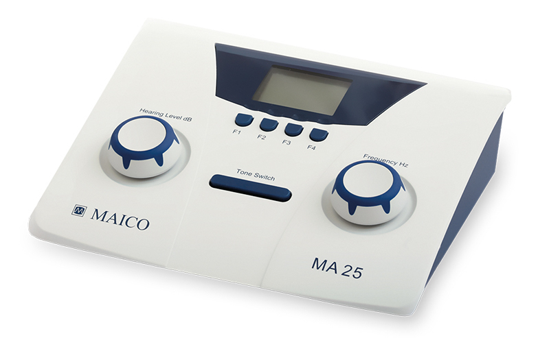
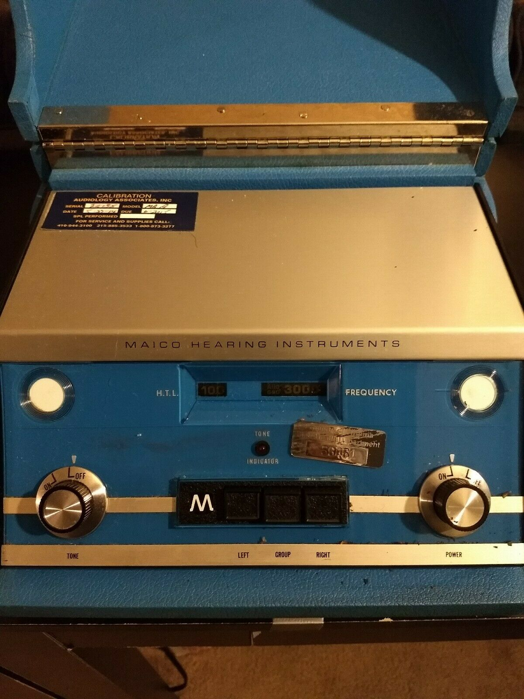
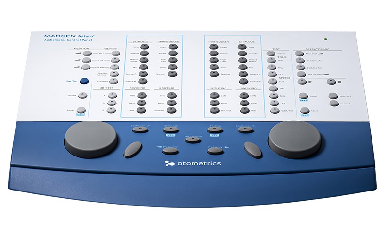
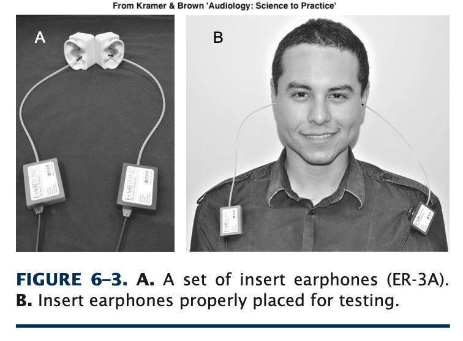
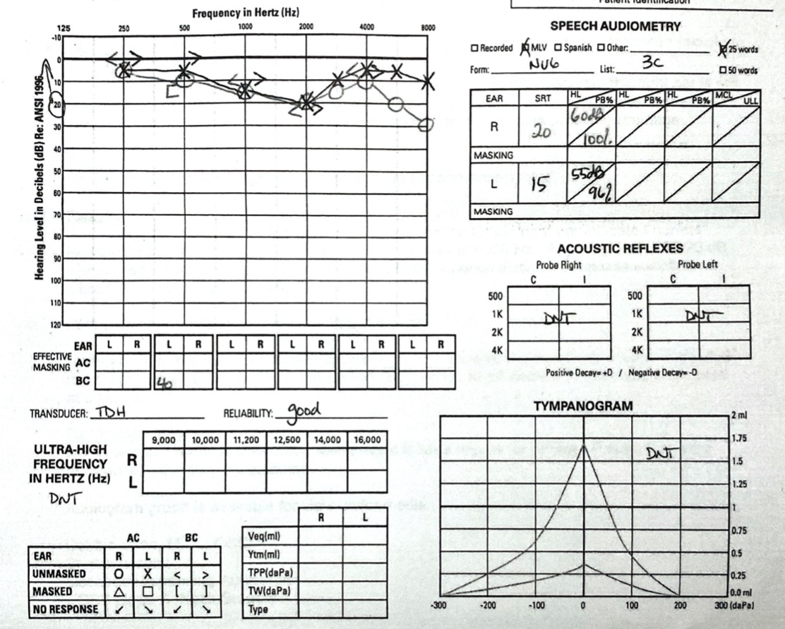
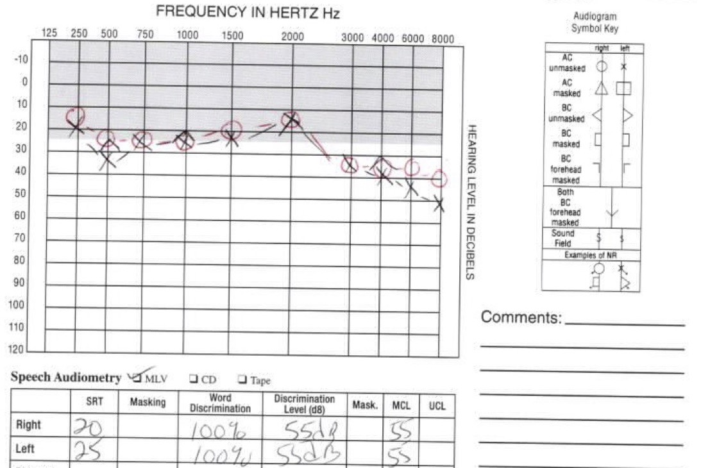
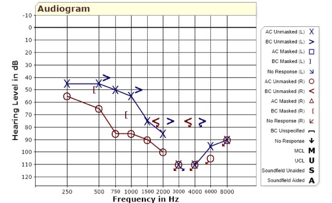

# Audiometry ### Will Styler - LIGN 113 --- ### We've now talked about 'objective' hearing tests - Otoscopy, Tympanometry, Acoustic Reflex Testing, OAEs, and ABR Testing - Let's bring the human element back --- ### Audiometry characterizes how effectively people are able to hear sounds - How well you can hear sounds at different frequencies and amplitudes - Pure tone audiometry - How well you can hear speech at different amplitudes - Speech Audiometry - Both test your ability to use your hearing - These are 'subjective' tests --- ### Today's Plan - Audiometric Testing Equipment - Pure-tone Audiometry - Speech Audiometry - Reading an audiogram --- ## Audiometric Testing Equipment --- ### Sound Booth <img class="r-stretch <img class="r-stretch" src="hearing/aud_soundbooth.jpg"> --- ### Sound Booths are crucial - Lowers the 'noise floor' - The signals being presented will have no 'competition' - You can only test sounds > RoomNoise - AttenuationOfHeadphones - **Don't trust the low end of a test done in a noisy booth!** --- ### Audiometer  --- ### Basic Audiometer Functions - Adjust the amplitude of the tone - Adjust the frequency of the tone - Send the tone --- ### Audiometers can be basic or complex ---  --- <img class="r-stretch" src="hearing/aud_audiometerMA42.jpg"> ---  --- ### Complex Audiometer Functions - Talk and listen to the patient inside the booth - Masking noise - Choice of transducers - Choice of stimulus type - Speech vs. Puretone vs. Warble Tone vs. Pulse Tone --- <img class="r-stretch" src="hearing/aud_audiometer_detail.jpg"> --- ### Software-based Audiometry <img class="r-stretch" src="hearing/aud_audiometer_pcbased.jpg"> --- ### Transducers - Audiologists refer to 'headphones' as transducers - These turn output from the audiometry box into sound - Different transducers for different goals - Audiological transducers are very 'flat' by design - They produce all relevant frequencies at the same levels --- ### Supraural Transducers <img class="r-stretch" src="hearing/aud_supraaural.jpg"> --- ### In-Ear Transducers  --- ### High-Frequency Headphones <img class="r-stretch" src="hearing/aud_ehf_headphones.jpg"> --- ### Bone Conduction <img class="r-stretch" src="hearing/aud_boneconduction.jpg"> --- ### Sound Field <img class="r-stretch" src="hearing/aud_soundfield.jpg"> - Generally not advised! --- ### Calibration is key! - 60 dB in software is meaningless when transducers and outputs vary - Professional calibration guarantees that the 60dB setting generates 60dB tones - Each transducer type must be calibrated separately - Calibration should be done yearly, ~$100 USD - Without calibration, all you know is relative frequency results - This is why [online or DIY tests](https://hearingtest.online/) aren't very reliable! --- ## Pure-tone Audiometry --- ### Pure-tone audiometry - Measures the amplitude required to hear a "pure tone" at a variety of frequencies. - Pure tones are simple waves, not complex - "Press the button when you hear a beep" --- ### Types of Tones - Pure Tones - Just a vanilla sine wave at Frequency f - Warble Tones - 'Frequency modulated' tones, where the sound goes between (e.g.) f +/- 5% at 5 Hz - Pulsed Tones - 'Amplitude pulsed' tones, where the puretone is played (e.g.) for 200ms, then off, then played... - [Pulsed Tones and Warble Tones are more easily distinguished from tinnitus](https://www.ncbi.nlm.nih.gov/pmc/articles/PMC5831060/)' - They also avoid 'standing waves' when played with speakers - Pick one and use it, thresholds aren't comparable across tone types --- ### Examples (800 Hz) Pure: <audio controls src="hearing/800pure.wav"> Pulsed (200ms): <audio controls src="hearing/800pulse.wav"> Warble (3 Hz): <audio controls src="hearing/800warble.wav"> --- ### The goal is to establish a 'threshold' - "What is the lowest amplitude sound this patient can hear by frequency?" - Thresholds are usually taken between 250-8000Hz - The end result is an *audiogram* --- ### The procedure - Play a tone at a given frequency - Wait for participant response - If they hear it, go quieter - If they don't, go louder - *... but you need to make sure they're not cheating!* --- ### Patients will give false responses! - False positives are responses when no tone is audible - False negatives are failures to respond to a tone they can hear --- ### Precautions to avoid biased tests - Randomly timing your presses to avoid guessing - Facing the patient away from you - Using a testing paradigm to arrive at the proper measurement - Not allowing patients to measure their own hearing - Again, this is why online tests aren't great --- ### '5 Down 10 Up' Paradigm <img class="r-stretch" src="hearing/aud_5down10up.jpg"> --- ### The threshold is determined by a 50% response rate - Patients should respond at least 50% of the time to that tone for that to 'count' --- ### This creates an 'audiogram' - Audiograms show the quietest tone reliably responded to across frequencies <img class="r-stretch" src="hearing/audiogram_2016_left.jpg"> --- ### You'll likely want to test bone conduction as well as air conduction! <img class="r-stretch" src="hearing/aud_bcvsac.jpg"> --- ### You'll want to use masking - Contralateral masking helps prevent one ear from 'helping' the other - If HL exceeds interaural attenuation - See the 'Masking' video for details there - Or Chapter 9 in your textbook --- ### You might test higher frequencies too! - High frequency audiograms go above 8000 Hz - This requires more specialized equipment - Useful for monitoring some kinds of ototoxic drugs and [detecting loss early](https://www.ncbi.nlm.nih.gov/pubmed/22122956) - Also [has some generalized benefits](https://journals.lww.com/thehearingjournal/Fulltext/2017/03000/Benefits_of_Extended_High_Frequency_Audiometry_for.8.aspx) --- ### We're going to stop here with pure tones! - The book goes into more details about testing kids, procedures, and other complexities! - Chapter 6 is your friend! --- ## Speech Audiometry --- ### Pure tones capture one aspect of hearing - Raw ability to hear frequencies - ... but often, poor speech intelligibility is the biggest complaint - **Why not test speech perception directly?** --- ### Speech Audiometry has three aspects - How loud does speech need to be for them to hear *that* speech is being produced? - The 'Speech Detection Threshold' (SDT) - How loud does speech need to be to be understandable? - The 'Speech Recognition Threshold' (SRT) - How accurately are they recognizing the words? - The 'Word Recognition Score' (WRS) --- ### Speech Audiometry Procedure - Read words aloud with the level limited to certain amplitudes - Ask the participant to repeat the words back - Score... - Whether they heard the word (SDT) - Whether they accurately heard the word (SRT) - Individual Phoneme Errors (WRS) - Repeat the task with masking noise to check perception in noise --- ### Not all words are equally understandable - Attempting to use words which are familiar to everybody - [Or are they?](https://www.audiology.org/news/impending-spondee-crisis-audiology-age-millennial) - Audiologists use monosyllables and "spondees", words with two stressed syllables --- ### Sample Audiology Spondees - [Words from the NU-6 Listing](https://pubs.asha.org/doi/10.1044/jshd.4003.388): sidewalk, birthday, cupcake, airplane, railroad, baseball, playground, cowboy, sunset, hotdog, outside... - [A new list](https://www.audiology.org/news/impending-spondee-crisis-audiology-age-millennial): smartphone, hashtag, upload, bikeshare, cashcow, laptop, iPad, flashmob, backpack, deadbeat, bandwidth, roadrage... --- ### Testing follows a fixed procedure - This is complicated, and there are many moving parts - You can use masking if the required level exceeds interaural attenuation - You can also do recognition in noise to get a better sense of in-the-world recogition - These are detailed in Chapter 8 --- ### Reported Results - Generally you'll report SDT and SRT in dB - You'll report maximum "PB" (phonetically balanced word recognition) and associated level for SRT - More detailed tests give more detailed results --- <img class="r-stretch" src="hearing/audiogram_speech.jpg"> --- ### These audiometric data give great information - What is the nature, severity, and distribution of hearing loss? - What of this loss is present in bone conduction as well? - How does this loss affect their ability to hear speech? --- ### All of this is recorded and reported in the audiogram  --- ## Reading Audiograms --- ### Audiograms give us data about thresholds, by frequency, with and without masking <img class="r-stretch" src="hearing/audiogram_blank.jpg"> --- ### Looking at an audiogram gives us information about hearing loss - We know what frequencies and amplitudes exist in the world - We see the difference between masked and unmasked - Sounds which are 'above the line' are not going to be audible - This gives rise to... --- ### The Speech Banana <img src="hearing/speech_banana.jpg"> --- ### Audiograms can then be interpreted for diagnostic purposes - ... and interpreting the audiogram is a skill we'll be working on - Often, audiograms (with the other tests we've discussed) provide key diagnostic information - **Reading Chapter 7 is important!** --- ### Let's look at a sample audiogram ---  --- --- --- ### Wrapping up - Audiometric Testing Equipment is specialized and expensive - Puretone Audiometry gives us absolute thresholds for hearing by frequency - Speech Audiometry gives us a better sense of how speech is perceived - Audiograms give us all the information we need in one convenient place --- <huge>Thank you!</huge>